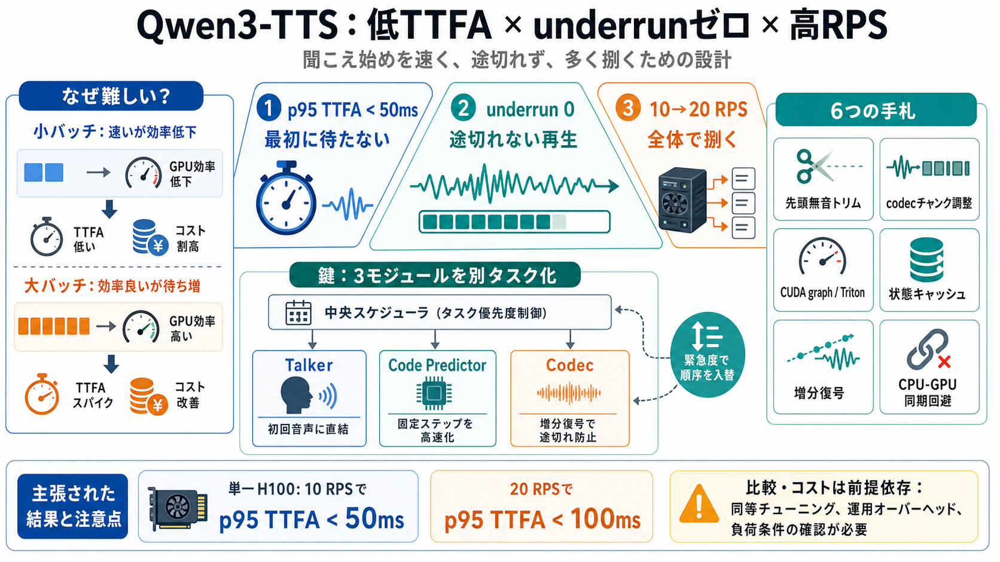

Qwen3-TTS Technical Report
## Architecture and Methodology The Qwen3-TTS architecture centers on a dual-track language model design that processes…

Qwen3-TTS（1.7B CustomVoice）を、聞こえ始め（TTFA）を抑えつつ、ストリーミングの途切れ（underrun）をゼロにし、同時に高いRPSを狙う設計を比較します。
焦点：p95 TTFA、underrunゼロ、高RPSを同時達成する道筋。
TTSでは「TTFA（Time-to-First-Audio）」が長いと待ち時間の不快感が増えます。一方、TTFA短縮のために小バッチ化するとGPU効率が落ちてコストとRPSが悪化します。
TTFAは「最初の締切」、underrunゼロは「連続性の締切」、高RPSは「全体処理量の締切」です。最適化対象が違うため、単純なチューニングでは破綻しやすくなります。
Nari Labsは、自社実装のQwen3-TTS（1.7B CustomVoice）で単一NVIDIA H100 SXM上にて、10 RPS達成かつp95 TTFAが50ms未満になったと主張しています。
またPoisson open-loopで5分ベンチし、5方式比較の結論として“自社のみsub-50ms p95 TTFAを維持”と記載。
記事では、比較対象エンジンの初期結果が大きく劣っていると述べています。例として、vLLM-OmniはTTFAが277ms級、SGLang-Omni△やM*は1,000ms級とされています。
先頭無音トリムやチャンク調整をしても同等に追いつけないことを示唆（公正性は条件依存）。
Qwen3-TTSの3モジュール（Talker / Code Predictor / Codec）を、同一スケジューラ配下で“別タスク”として扱い、緊急度に応じて優先度を入れ替える設計が鍵だと説明されています。
“Talker+Code Predictor一体化”だと非プリエンプティブで緊急処理を妨げる、という見立て。
TTFAとunderrunゼロを成立させるため、(1)無音トリム、(2)codecチャンク蓄積の調整、(3)3モジュール別タスク、(4)Code PredictorのCUDA graph/Triton最適化、(5)Codecの状態キャッシュと増分復号切替、(6)CUDA graphキャプチャ/同期回避などを行うと要約できます。
Code Predictorは規則的なステップで動くため、CUDA graphやTriton最適化で取り込み、実行オーバーヘッドを抑える方針が示されています。
ここで重要なのは「小細工」ではなく、モデルの計算特性に合わせて実行形を固定化する点。
Codecでは状態キャッシュによる増分復号を導入し、初回のみフル復号→以降は必要部分だけ更新することで、継続再生の効率とレイテンシの両方を狙っています。
バッチサイズ別のCUDA graphキャプチャや、CPU-GPU同期の回避などで、推論の周辺コスト（待ち・同期）を減らす方向性が述べられています。
結果として、TTFAの揺らぎ（レイテンシスパイク）を抑える設計意図につながります。
記事は「Real-time」を、TTFA・underrun・理解可能性（recognizability）という4要素で定義していると述べます。単に速いだけでなく、再生の途切れと聞き取りやすさまで含めた評価になっているため、最適化の方向が明確になります。
残り2要素：理解可能性と“体験”の統制。
コスト試算では、10 RPS時に約630文字/秒を生成し、H100 SXMの時間単価$4.29/時を用いて、稼働率最大の概算として約$2 / 1M charactersに相当すると計算しています。
注意：ネットワーク/アイドル/運用オーバーヘッド等を除外した“前提付き”見積もりと明言。
本記事の説得力は、体験指標（TTFA p95、underrunゼロ、理解可能性）を目的関数に据え、Qwen3-TTSの内部モジュール構造に沿って“計算オーケストレーション”を設計している点です。一方で、公平性（同等チューニング範囲）や品質評価の粒度、コスト前提、負荷分布の現実性には追加の統制条件が必要です。
結論として、自社方式が“普遍的に最速・最安”と断言するには、品質評価の統制・同一計測方法・より多様な負荷分布・実稼働での稼働率検証が追加で必要です。とはいえ、実装をオープンにしベンチを提示している点は、追試と再評価を促す意味で前向きです。
## Architecture and Methodology The Qwen3-TTS architecture centers on a dual-track language model design that processes…
This report introduces Qwen3-TTS, a family of state-of-the-art multilingual, controllable, and streaming text-to-speech …
Universal End-to-End Architecture: Utilizing a discrete multi-codebook LM architecture, it realizes full-information end…
Qwen3-TTS unifies diverse speech generation tasks—ranging from zero-shot cloning and cross-lingual transfer to fine-grai…
In this report, we present the Qwen3-TTS series, a family of advanced multilingual, controllable, robust, and streaming …